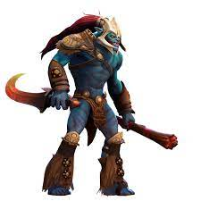

Huskar
Lore
Huskar - герой для центральної лінії, здатний ефективно битися з противником, постійно перебуваючи на межі життя та смерті. Здатність Inner Fire дозволяє Huskar відштовхнути від себе ворогів навколо, завдаючи їм шкоди і накладаючи безсилля. Ця здатність серйозно збільшує виживання героя, не даючи ворогові швидко розправитися з вами, до того ж підвищуючи швидкість зачистки лісових таборів кріпів.

З цією здатністю герой стає одним із найнебезпечніших супротивників у ранній та середній грі, отримуючи можливість вбити мету навіть після своєї смерті. Пасивна навичка Blood Berserker's Blood збільшує швидкість атаки та регенерацію Huskar за кожен відсоток відсутнього в нього здоров'я.
Завдяки Berserker's Blood герой постійно знаходиться за крок від смерті, з величезною швидкістю регенеруючи та атакуючи. Ефект від здатності добре поєднується з Armlet of Mordiggian, який посилить вас у бою, при тому серйозно підвищивши вашу живучість.
Ультимативна здатність Life Break дає можливість герою стрибком скоротити дистанцію з ворогом, завдаючи йому і собі шкоди, яка залежить від максимального здоров'я.